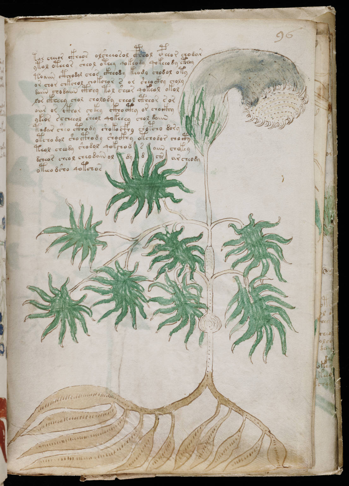

f96r
1tor cheeor ckheos olsheeosol cpheol cpheor chodar2ytol oteeor sheol oteey qokeody qokeeody cthey3toaiin ctheodal chos ckheody keody chodol oty4or chor chkchol chokchor s or sheockhy choly5daiin chodaiin cthey tol sheor qokeol okol6lor ckheey chol cholody cheol ctheor sor7oiir or ckhor chkey ckhocthy or chockhy8ykeor secheeol sheol qokeeey chol daiin9todar sheo cthody shokocfhy chopcho dory10otcho dol shocthody shockhy otchodor chocty11teol cheody shodol qokchodsaiinchokey12dcheorcheolcheodain oldydchsarcheody13oteeo dsho qotchos
